Ruta por Oviedo
Tipo: Monumentos
Transporte: A pie
Fecha: 2018-11-02
Duración: PT2H
Agencia: Turismo de Oviedo
Recorrido visitando los monumentos más conocidos de Oviedo
Recomendada para: Jóvenes y adultos
Inicio de la ruta: Oviedo, Plaza de la catedral, coordenadas: 43º21'44''N, -5º50'39''W, altitud: 232m
Referencias
Puntuación:8
Hitos de la ruta
La Lechera
Esculura homenaje a las mujeres que trabajaron como leceras hasta mediados del silo XX.
Coordenadas: 43º21'38''N, -5º50'38''W, altitud: 233m
Distancia desde el hito anterior: 300metros
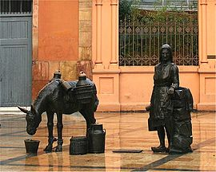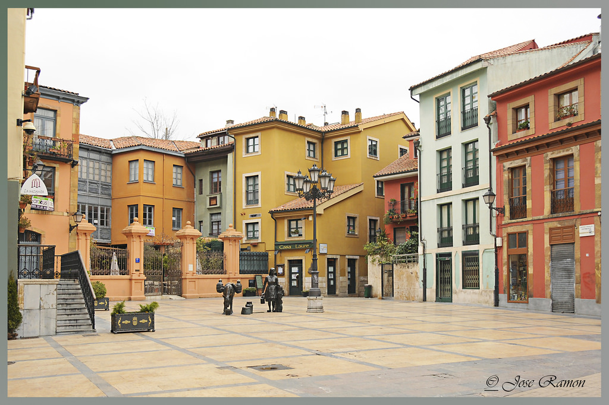Vendedoras del Fontán
Representa a las mujeres que venían a Oviedo para vender cerámica.
Coordenadas: 43º21'34''N, -5º50'45''W, altitud: 232m
Distancia desde el hito anterior: 280metros
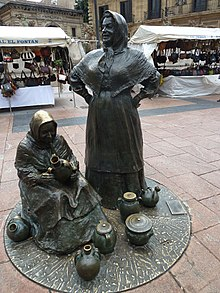¡Adiós, cordera!
Representa el cuento de Alas Clarín del mismo nombre que la escultura.
Coordenadas: 43º21'42''N, -5º51'12''W, altitud: 241m
Distancia desde el hito anterior: 850metros
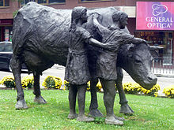
Ruta por la costa
Tipo: Paisajística
Transporte: Mixta a pie y bus
Fecha: 2019-05-05
Duración: PT6H
Agencia: Turismo de Asturias
Recorrido visitando lugares de la costa Asturiana
Recomendada para: Jóvenes y adultos
Inicio de la ruta: Luarca, Faro de Luarca, coordenadas: 43º32'58''N, -6º31'57''W, altitud: 17m
Referencias
Puntuación:10
Hitos de la ruta
Cudillero
Con un relevante puerto pesquero, es un pueblo con mucho turismo.
Coordenadas: 43º33'36''N, -6º08'55''W, altitud: 49m
Distancia desde el hito anterior: 39.4kilometros
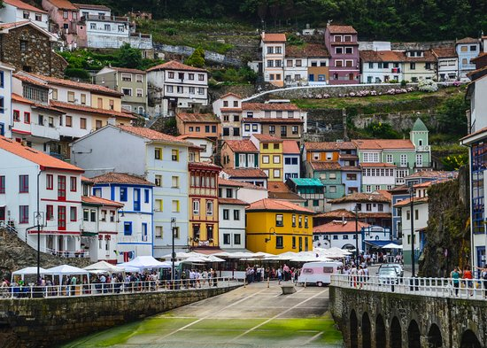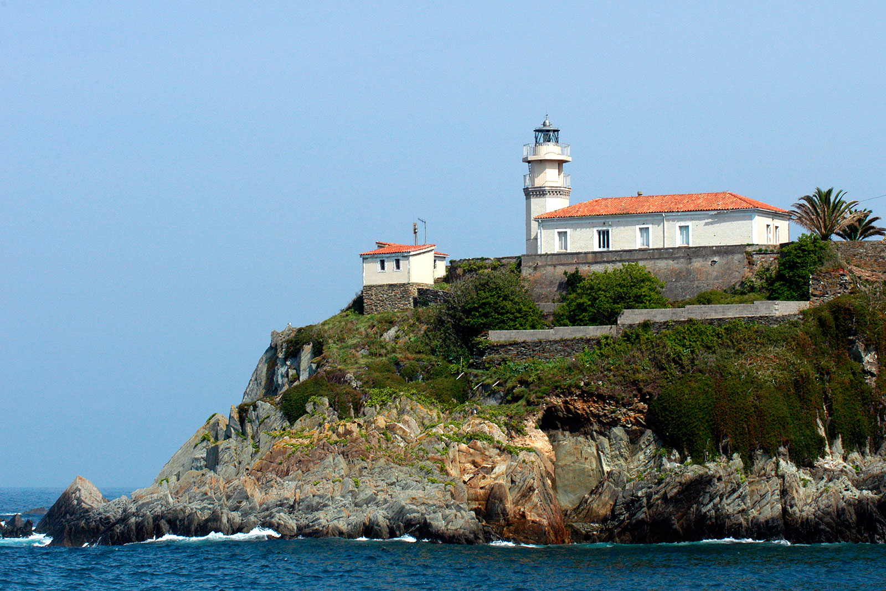Luanco
Se encuentra a poca distancia del Cabo Peñas y su turismo se ha desarrollado superando en importancia a la pesca.
Coordenadas: 43º36'49''N, -5º47'34''W, altitud: 4m
Distancia desde el hito anterior: 47.2kilometros
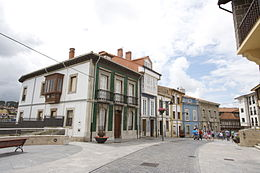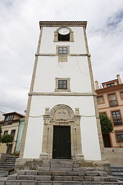Lastres
Fue el escenario de la serie televisiva "Doctor Mateo"
Coordenadas: 43º30'50''N, -5º16'13''W, altitud: 58m
Distancia desde el hito anterior: 60.4kilometros
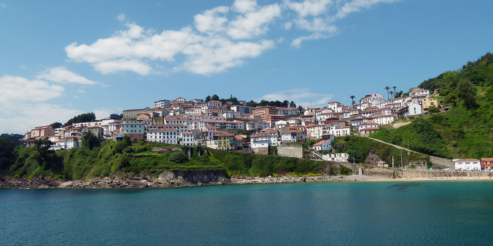
Ruta de la sidra por Gijón
Tipo: Gastronómica
Transporte: Mixta a pie y bus
Fecha: 2018-11-03
Duración: PT3H
Agencia: Turismo Gijón
Recorrido por llagares de Gijón
Recomendada para: Adultos
Inicio de la ruta: Gijón, Llagar Sidra Trabanco, coordenadas: 43º28'13''N, -5º38'45''W, altitud: 153m
Referencias
Puntuación:8
Hitos de la ruta
Llagar Bernueces
Llagar Bernueces es uno de los llagares más antiguos de Asturias. Con unos orígenes que datan de 1881, se trata de uno de esos enclaves únicos donde la tradición cultural y gastronómica se encuentra impregnada en cada detalle, en cada rincón.
Coordenadas: 43º30'35''N, -5º37'32''W, altitud: 58m
Distancia desde el hito anterior: 7.1kilometros
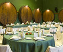Llagar Sidra Piñera
Sidra Piñera es una empresa asturiana, de cáracter totalmente familiar, que desde hace más de 50 años ofrece a sus clientes su sidra, fabricada de manera totalmente artesanal.
Coordenadas: 43º30'06''N, -5º36'15''W, altitud: 74m
Distancia desde el hito anterior: 2.2kilometros
Sidra Acebal
En el llagar de Sidra Acebal podrás ver cómo se elabora la sidra tradicional asturiana.
Coordenadas: 43º32'16''N, -5º37'24''W, altitud: 18m
Distancia desde el hito anterior: 4.5kilometros
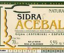
Costa de los dinosaurios
Tipo: Paisajística
Transporte: Mixta a pie y bus
Fecha:
Duración: PT4H
Agencia: Sin agencia
Se conoce como “Costa de los Dinosaurios” al sector litoral de Asturias comprendido entre las localidades de Gijón y Ribadesella y caracterizado por la abundancia de huellas y restos óseos de dinosaurios y otros reptiles jurásicos.
Recomendada para: Niños
Inicio de la ruta: Tazones, Puerto de Tazones, coordenadas: 43º32'44''N, -5º23'53''W, altitud: 0m
Referencias
Puntuación:7
Hitos de la ruta
Faro de Tazones
A partir de aquí, y continuando hacia el este (a la derecha) por la base del acantilado unos 200m. se accede a la superficie de un estrato de arenisca, inclinado unos 25º hacia el mar, que muestra multitud de icnitas tridáctilas cruzándose en varias direcciones, constituyendo diversos rastros, así como una huella de arrastre de la cola.
Coordenadas: 43º32'52''N, -5º23'56''W, altitud: 114m
Distancia desde el hito anterior: 2.8kilometros
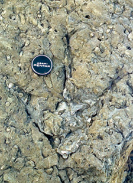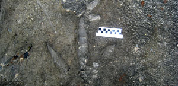Acantilados de luces
Cerca de allí, y un poco al este, se encuentra un bloque suelto de arenisca con dos contramoldes de huellas de dinosaurio, una tridáctila de un terópodo y otra en forma de media luna (mano de saurópodo).
Coordenadas: 43º32'02''N, -5º18'01''W, altitud: 96m
Distancia desde el hito anterior: 28.3kilometros
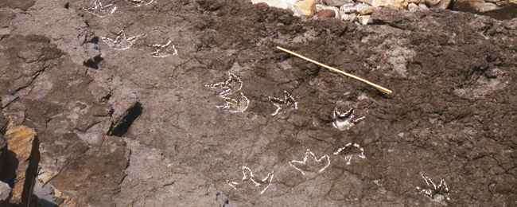Playa de la Vega
Contiene abundantes fósiles marinos, como braquiópodos, belemnites, ammonites, bivalvos, etc.
Coordenadas: 43º28'43''N, -5º08'40''W, altitud: 2m
Distancia desde el hito anterior: 24.4kilometros
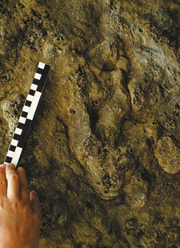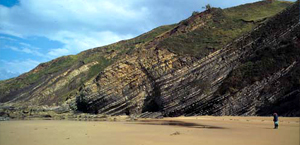
Ruta del agua de Taramundi
Tipo: Senderismo
Transporte: A pie
Fecha:
Duración: PT8H
Agencia: Sin agencia
Magia es la palabra que puede describir esta ruta, en la que nuestros pasos nos llevan a un bosque galería por caminos y pequeñas carreteras que nos van descubriendo su etnografía en O Mazonovo y Os Teixóis/Teijóis, la artesanía de las navajas en Os Esquíos/Esquíos, la cascada Salgueira, el encanto y la armonía del pueblo de As Veigas/Las Veigas.
Recomendada para: Personas en buena forma física
Inicio de la ruta: Taramundi, Camino a Monzonovo, coordenadas: 43º21'27''N, -7º06'26''W, altitud: 199m
Referencias
Puntuación:7
Hitos de la ruta
Os Esquíos
Situada en plena naturaleza con unas vistas incomparables, Taramundi es un lugar idóneo para perderse, disfrutar del sabor de antaño sin olvidar el confort y la comodidad.
Coordenadas: 43º20'43''N, -7º05'28''W, altitud: 329m
Distancia desde el hito anterior: 3.3kilometros
.jpg)
As Veigas
La aldea de As Veigas, se encuentra en medio de un bosque autóctono y junto al lecho de un río virgen.
Coordenadas: 43º19'39''N, -7º05'08''W, altitud: 364m
Distancia desde el hito anterior: 2.7kilometros
.JPG)
.JPG)
Os Teixóis
Es una pequeña aldea en la que se puede descubrir un valioso conjunto de ingenios hidraúlicos en su estado natural.
Coordenadas: 43º20'28''N, -7º04'46''W, altitud: 327m
Distancia desde el hito anterior: 4.7kilometros
.JPG)
.JPG)